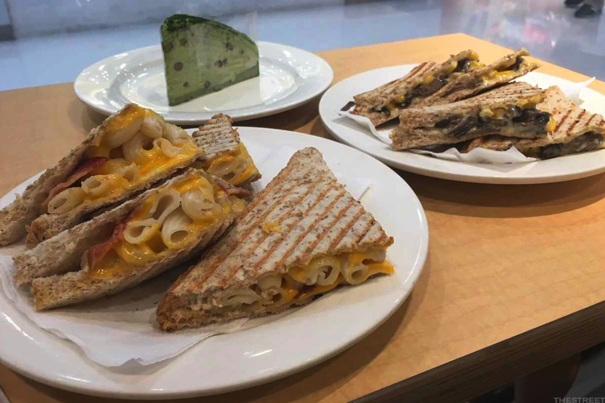
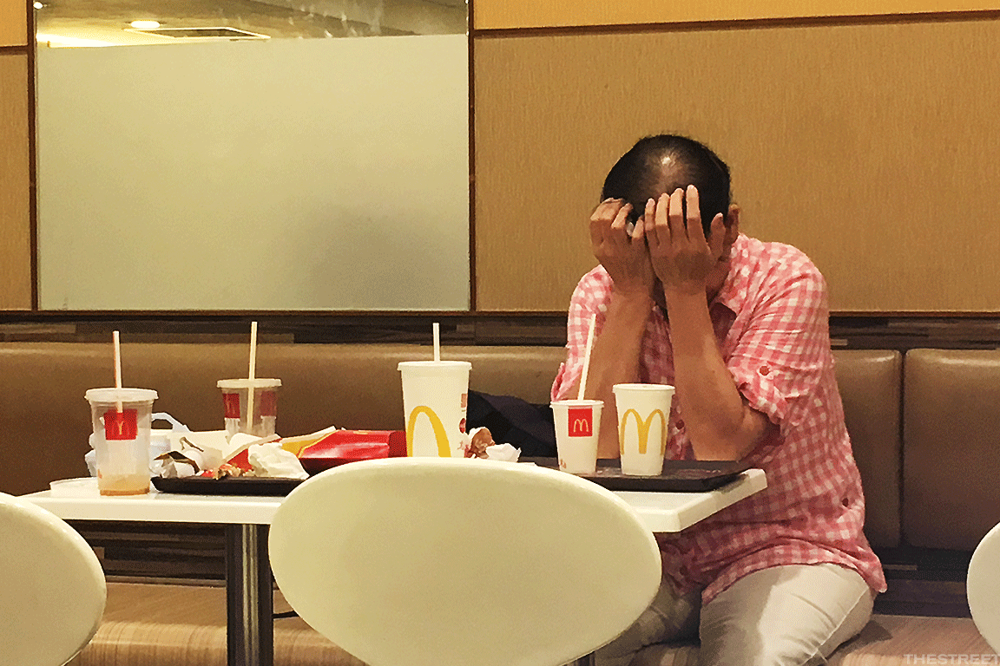
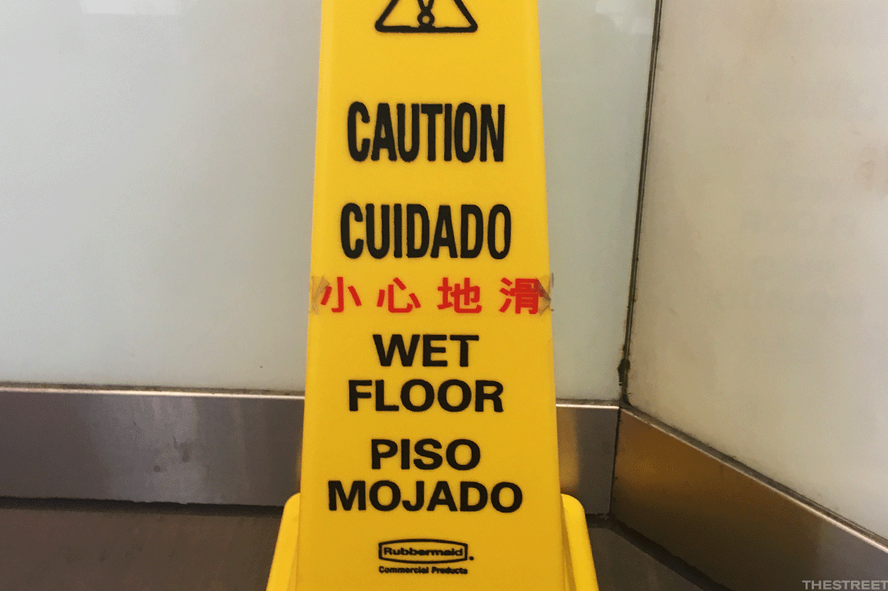

It's the Hungry Ghost festival this month in Hong Kong where I live, and I passed a metal pail full of "hell money" burning in the street of the Tai Po Market area recently on the way to check out how my local McDonald's (MCD) stacks up with what you'd find at a U.S. one. The hungry ghosts were apparently getting fed before I did.
Tai Po means "big field" in Cantonese, and this used to be a market area, but the produce has moved indoors and upstairs to a government center. In its place, you've got concrete residential high rises built around the area's old market square, with the green minibuses and green taxis that zip by reflecting the district's farming history: 
Of course, there aren't that many veggies at McDonald's, but you can buy a Caesar salad at the chain's Hong Kong restaurants.
In fact, Americans who take a trip to a Hong Kong McDonald's will find that the restaurants here are full of all sorts of surprises.
The oddities on the menu include soy milk, honey-pear tea and the British berry drink Ribena on the drinks list. Sweet-corn pie, sweet-corn cup and Thai chicken wings are also on the menu, and sometimes you'll find spicy taro in place of apples in the dessert pies. There are also four breakfast dishes with macaroni (McDonald's calls it "twisty pasta") mixed into a thin soup. You get your pick of veggies-n-egg, sausage-n-egg, ham-n-egg or grilled chicken on top.
That's a nod to Hong Kong's original "fusion" food. Like the city's famously strong lai cha milk tea (so powerful that it's orange, laced with sweetened condensed milk) it takes a Western staple brought over by the British and adds in some Cantonese comfort-food ingredients. And check out this bacon-macaroni-and-cheese toastie (left) and corn-and-cheesy-mushroom toastie (right), with some red-bean macha layer cake (rear) for dessert.

However, a Hong Kong McDonald's menu contains perhaps the least of the surprises that Americans will find here. What's more surprising are the social trends that drive the people who populate these restaurants. For openers, McDonald's Hong Kong restaurants are normally crammed; at one point, the city hosted seven of the chain's 10 busiest stores worldwide.
That's not just because of fast food's convenience in a fast city like Hong Kong. It's also because of the service.
One of the first things that might surprise an American who visits a Hong Kong McDonald's is that staffers will collect your tray and get rid of your trash for you, much like the full-service gas stations across the city where clerks still pump your gas. After all, wages are low here.
By contrast, Hong Kong has some of the most expensive retail space on the planet, so many fast-food restaurants have small entries at street level that lead to upstairs eateries. In the case of the store I visited, there was a ground-level counter for ordering (with a fast-serve window on the street for ice-cream cones), plus a basement below with tables and seating:
Another unusual characteristic is that many Hong Kong McDonald's are open 24 hours a day.
These places often serve as the city's proxy libraries, school desks, parks and homeless shelters. Elderly citizens come in for a chat with their friends or simply to cool down in the air conditioning. Sometimes they catch up on their sleep:
Schoolkids also often park themselves at tables and do their homework rather than head home and do it on a cramped desk in a shared room.
But given the sad state of the city's social affairs, it's not uncommon for homeless people to sit themselves down and bed in for the night in a 24-hour store. Although the city's public housing is excellent (and hosts around half of the population), Hong Kong's social services are poor. Some proud elderly people also turn down their government grants because they don't want to draw on the state.
There's also darker side to the city's midnight McDonald's dwellers. Mental health is a particular problem in Hong Kong, with only a few hundred psychiatrists and clinical psychologists serving a city of 7.3 million. The topic is also taboo in traditional Chinese society. So, Hong Kongers with mental-health conditions often get no treatment and sometimes find themselves on the street. Other homeless people say they prefer to live in parks or underpasses than live in high-rise towers where no one would notice when they die.
As I wrote this, a 60-something woman was sitting opposite me, head in her hands, taking a nap:

The woman later moved slowly off after her rest, replaced by a counterpart of the same age (but not as tired) who sat for 20-odd minutes as she tended an order of fries before shuffling heavily up the stairs. She was replaced by a well-dressed woman in her late 60s carrying two large handbags, who left her order of a small juice completely untouched while she messaged incessantly on her smartphone. Small orders, lots of downtime.
To my left, two high-school girls in Hong Kong's ubiquitous blue-shift uniforms sat speaking Mandarin -- a sure sign that their families are new immigrants to the city. First, they tackled their homework, then they got going on their smartphones. To witness schoolgirls talking Mandarin was previously unheard of in this Cantonese-speaking city. In fact, there's great tension as Hong Kong slowly becomes just another Chinese city. Cantonese still dominated in the McDonald's I visited, but Mandarin voices were surprisingly common.
Hong Kong is also a city with little landfill space, so it's frustrating to see residents continue to rely on virtually indestructible plastic or even polystyrene for one-time use. There's no recycling that I've seen at McDonald's Hong Kong stores, so all of those plastic lids and straws end up in the trash. At least the burger wrappers are now paper -- a big change from when I moved here in 2001.
I finished off my "spicy fudge sundae" (this month's menu specialty is Tabasco sauce), then took my empty plastic sundae cup with me to recycle on my own. On the way out, I passed signs clearly sent to the Hong Kong McDonald's from the United States. "Cuidado Piso Mojado" -- "Caution, Wet Floor" in Spanish -- they warned, even though no virtually one in Hong Kong speaks Spanish. Chinese letters that carried the same warning looked like they'd been stenciled in.
